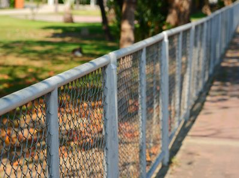
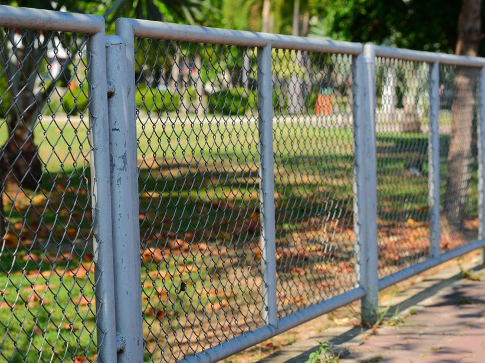

Height and gauge
Commercial fabric and an 8-foot line are not priced like a 4-foot yard fence.
Commercial fencing
Heavier chain link, vehicle gates, and screens for storage yards, churches, shops, and job sites in Jacksonville. A commercial lot gets a commercial spec. It does not get a backyard panel kit.


Call this in when trucks need a gate, the lot has to be closed after hours, or a property manager handed you a height and a fabric gauge. Inside the City of Jacksonville, nonresidential fences are allowed up to 8 feet under the published city standard. Screening around trash areas has its own material rules, and chain link with slats is not the screen those areas are supposed to use.
Barbed wire and razor wire are commercial add-ons only where the parcel and the local rule allow them. On a residential lot, Onslow County requires barbed wire on the interior side. We do not put that material on a quote until the rule for that address is clear. Privacy screen is available on a frame built for the wind. Temporary job-site fence is available when you can tell us how long it has to stand.
We price the line on your lot. These are the pieces that move the number.
Commercial fabric and an 8-foot line are not priced like a 4-foot yard fence.
Vehicle gates, cantilever or swing, move the number more than the fabric does.
Barbed wire or a screen is extra material and extra post strength.
A written spec from a GC can require fittings a simple yard does not.
Existing pavement, utilities, and a live driveway change how posts go in.
A temporary line and a permanent line are planned differently.
The posts, fabric, and gates are sized for the use. A storage yard or a job site does not get a residential panel kit. Vehicle gates need posts and hinges that can carry a truck opening.
Where the property and the local rules allow it, a commercial chain-link line can take a privacy screen or barbed wire. We confirm the rule for the parcel before that material goes on the quote.
Temporary chain link is a normal request. Tell us how long it has to stand and whether it has to move. A temporary line still has to stay out of a sidewalk and a drive aisle.
The address, how the lot is used, the gate width vehicles need, and any spec from a property manager or contractor. A site plan helps. We still look at the ground before we lock a number.
Nonresidential fences in the city are allowed up to 8 feet under the published city standard. Trash-area screening has its own rules. We match the fence to the use and the standard for that parcel.